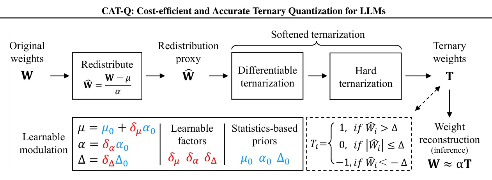
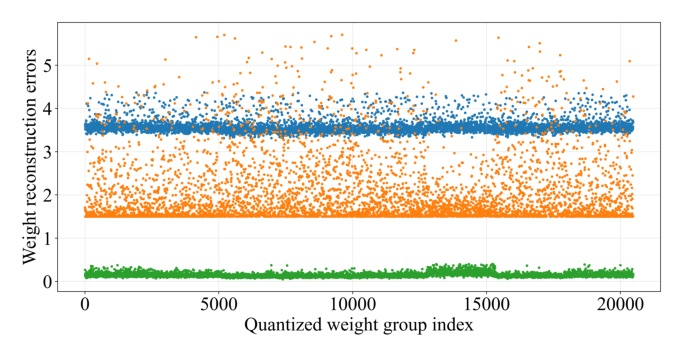
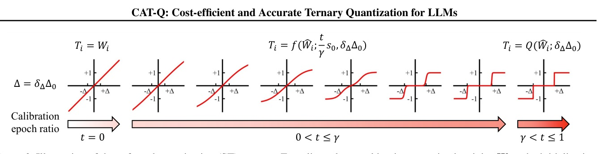

Ternary LLMs no longer have to be trained from scratch.
CAT-Q uses PTQ, not QAT: 512 calibration samples (~1M tokens) produce 1.58-bit LLMs that compete with BitNet / TriLM-style models trained on 100B–1T tokens.
| Family | Quantization route | Training tokens | Max scale / note |
|---|---|---|---|
| BitNet 1.58-bit v2 | QAT | 100B | largest 7B |
| TriLM | QAT | 300B | largest 3.9B |
| Tequila | re-training / QAT-like | 10B | only 1B and 3B Llama3 |
| CAT-Q | PTQ calibration | ~1M | 1.7B–235B |

Flow: W → Ŵ → differentiable ternarization → hard T; deploy as W ≈ αT.


ST schedule: identity → differentiable ternary until γ → hard ternary.
| Model / method | Tokens | Avg acc. | Readout |
|---|---|---|---|
| BitNetV1-1.3B | 100B | 48.28 | QAT baseline |
| TriLM-1.5B | 300B | 50.20 | QAT baseline |
| Qwen3-1.7B + CAT-Q | 1M | 51.01 | PTQ wins |
| TequilaLLM-3B | 10B | 57.60 | retraining |
| Qwen3-4B + CAT-Q | 1M | 57.06 | near Tequila |
| Qwen3-4B + CAT-Q | 2M | 58.80 | beats Tequila |
| BitNetV1-7B | 100B | 57.42 | QAT baseline |
| Qwen3-8B + CAT-Q | 1M | 61.76 | PTQ wins |
| Model | Method | Bits | Avg acc. |
|---|---|---|---|
| Llama2-7B | SliderQuant | W2A16 | 55.38 |
| Llama2-7B | CAT-Q | W1.58A16 | 57.69 |
| Llama2-70B | SliderQuant | W2A16 | 71.08 |
| Llama2-70B | CAT-Q | W1.58A16 | 72.72 |
The 235B result is the “PTQ scalability” proof point.
CAT-Q reports ternarizing LLMs from 1.7B to 235B parameters, with 1–60 hours on 8 A100-80GB GPUs. Qwen3-235B-A22B reaches 69.09 average accuracy under W1.58A16.
| Model | Format | Weight memory | CPU tok/s | GPU tok/s |
|---|---|---|---|---|
| Qwen3-4B | W4A16 | 2.32 GB | 19.31 | 225.91 |
| Qwen3-4B | W2A16 | 1.55 GB | 23.84 | 268.51 |
| Qwen3-4B | CAT-Q | 1.01/1.17 GB | 37.35 | 320.34 |
| Llama2-7B | W4A16 | 3.80 GB | 11.83 | 174.34 |
| Llama2-7B | W2A16 | 2.63 GB | 17.01 | 210.72 |
| Llama2-7B | CAT-Q | 1.62/1.90 GB | 26.30 | 281.66 |
CAT-Q works because it separates “where to quantize” from “how to converge.”
| Model | Strategy | Avg acc. | Delta vs SA |
|---|---|---|---|
| Qwen3-4B | Static approximation | 40.16 | -- |
| Qwen3-4B | Direct learning | 46.94 | +6.78 |
| Qwen3-4B | LM (ours) | 57.06 | +16.90 |
| Llama2-7B | Static approximation | 45.37 | -- |
| Llama2-7B | Direct learning | 50.23 | +4.86 |
| Llama2-7B | LM (ours) | 57.69 | +12.32 |
| Model | Baseline | LM-only | LM + ST |
|---|---|---|---|
| Qwen3-4B | 40.16 | 53.19 | 57.06 |
| Llama2-7B | 45.37 | 55.97 | 57.69 |
| Configuration | Setting | Why it matters |
|---|---|---|
| Calibration set | C4 | standard PTQ calibration corpus |
| Samples x length | 512 x 2048 | ~1M calibration tokens |
| Group size | 128 | matches recent ternary QAT comparisons |
| Δ0 / s0 / γ | 0.5 / 30 / 0.8 | ST schedule defaults |
| Optimizer / epochs | AdamW / 60 | short PTQ optimization |
“CAT-Q can efficiently quantize them into ternary models using only 512 calibration samples ... yielding about a 100,000x reduction in training tokens.”
CAT-Q 只用 512 個校準樣本就能量化成 ternary model，訓練 token 相對 BitNet 1.58-bit v1/v2 約少 100,000 倍。Abstract p.1
“The first challenge is that direct ternarization ... tends to generate a ternary weight distribution that is not well aligned with the high-precision weight distribution.”
第一個核心問題是 ternary weights 與原始 FP weights 的分布不對齊。§1 p.2
“By this two-stage relay of differentiable ternarization and hard ternarization, ST establishes a smooth transition that effectively guides the ternarization process toward stable convergence.”
ST 的關鍵是先用可微分路徑靠近 ternary，再切回 hard ternarization，讓收斂更穩。§2.3 p.5
“Optimized kernel support for diverse 1.58-bit LLMs remains lacking.”
方法能產出 ternary LLM，但通用高效 kernel ecosystem 還沒有完全成熟。Appendix G p.16
CAT-Q 的價值不只在 1.58-bit 數字，而是在把 ternary LLM 從 QAT 工程變成 PTQ 工程。